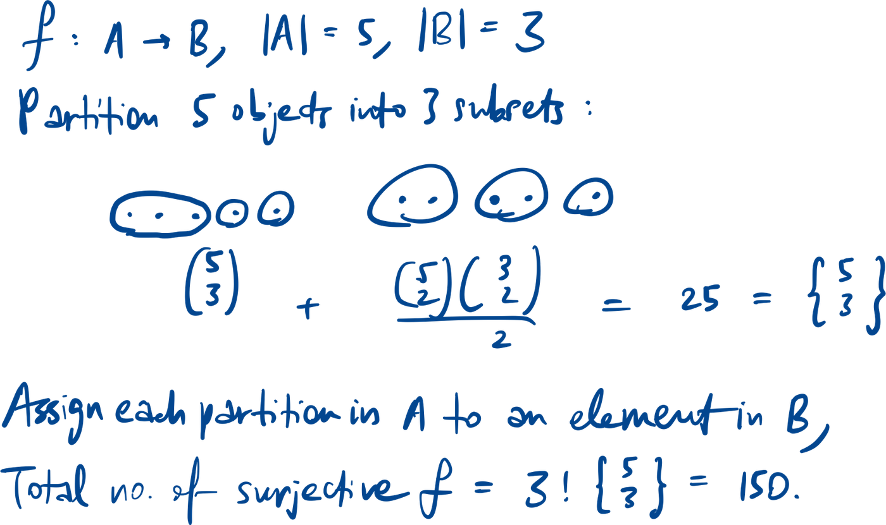
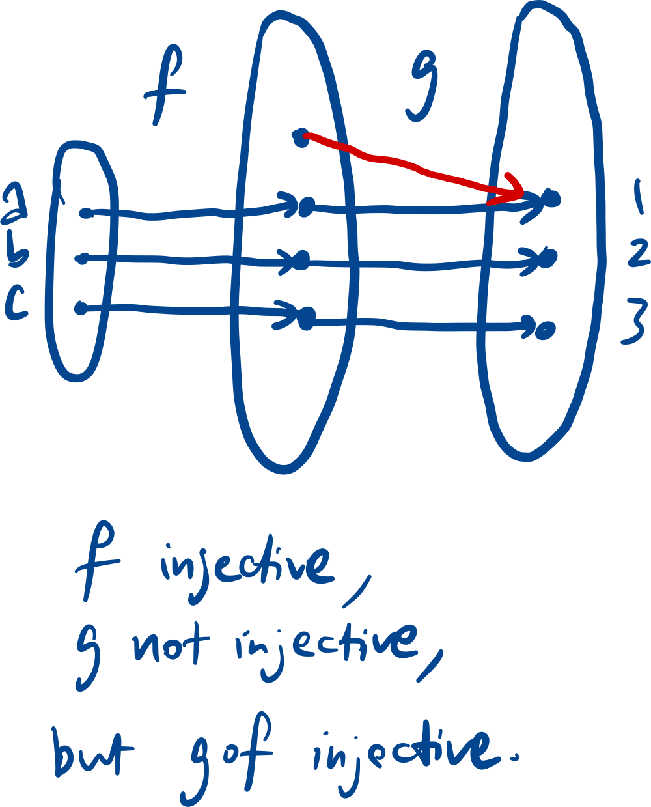
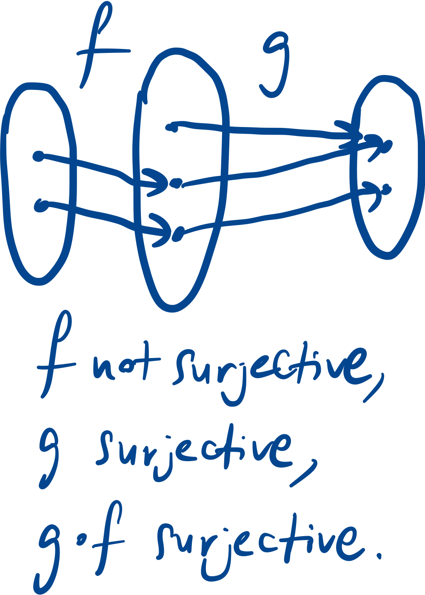
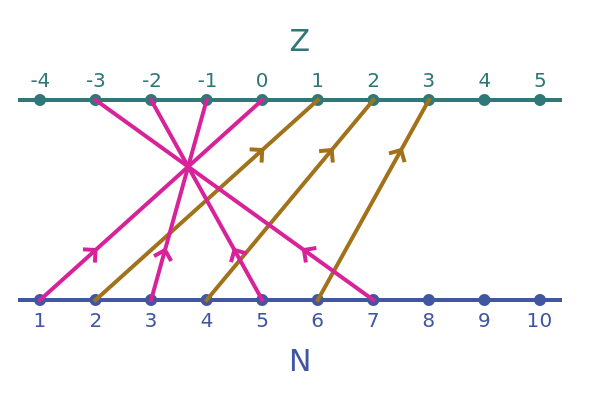
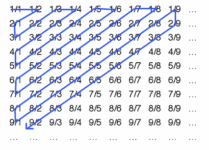
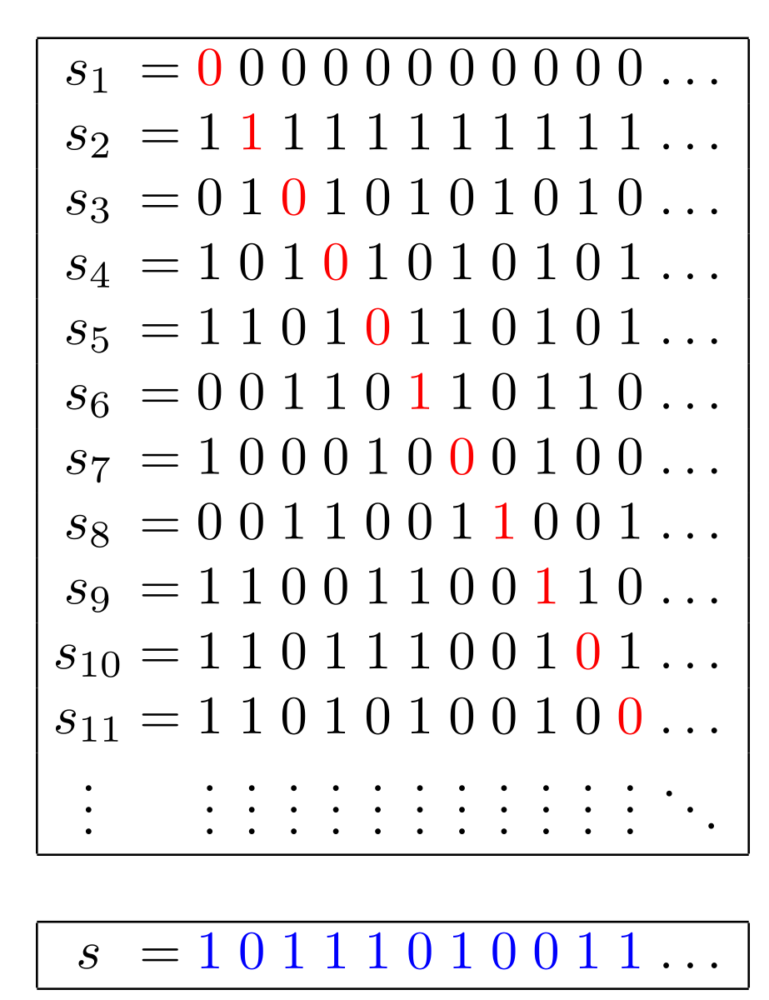

A function assigns every element in its domain to one and only one
element in its codomain.
Range of a function is a subset of the codomain, containing all the
images.
Injective
OR
Surjective
is
the number of ways to partition a set of m objects into n non-empty
subsets (Stirling number).

Bijective
Identity function
Inverse function
Composite function


Special functions
Floor, ceiling functions
Pigeonhole principle
Mapping one finite set to a smaller finite set cannot be an injective
function.
Example question
In a party of 6 people, prove that there exists at least 3 people who
are all friends or all strangers.
Take some person A, he can be friends/strangers with 5 other people
(B, C, D, E, F). By pigeonhole principle, there are at least
people with whom he has the same relationship with. WLOG, suppose A is
friends with B,C,D. Then look at the relationships between B, C, D. If
any 2 of them are friends, suppose B & C are friends, then A, B, C
form the 3 people who are friends with each other. If none of B, C, D
are friends with each other, then we have the 3 people who are strangers
with each other.
Countability


